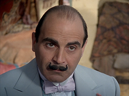

Watch the first episode in full here:
Here's a photo of the man himself

In fact, let's make it a little bit bigger, shall we?
Much better
Hercule Poirot is a fictional Belgian detective, created by Agatha Christie. Poirot is one of Christie's most famous and long-lived characters, appearing in 33 novels, one play (Black Coffee), and more than 50 short stories published between 1920 and 1975. Poirot has been portrayed on radio, in film and on television by various actors, including:
| Name of actor | Number of appearances |
|---|---|
| Austin Trevor | 12 |
| Alfred Molina | 1 |
| Peter Ustinov | 2 |
| Albert Finney | 18 |
| David Suchet | 12,982 |
In order of preference, starting from "3", these are my favourite:
If you would like to know more about Poirot, please enter your email address and click the button